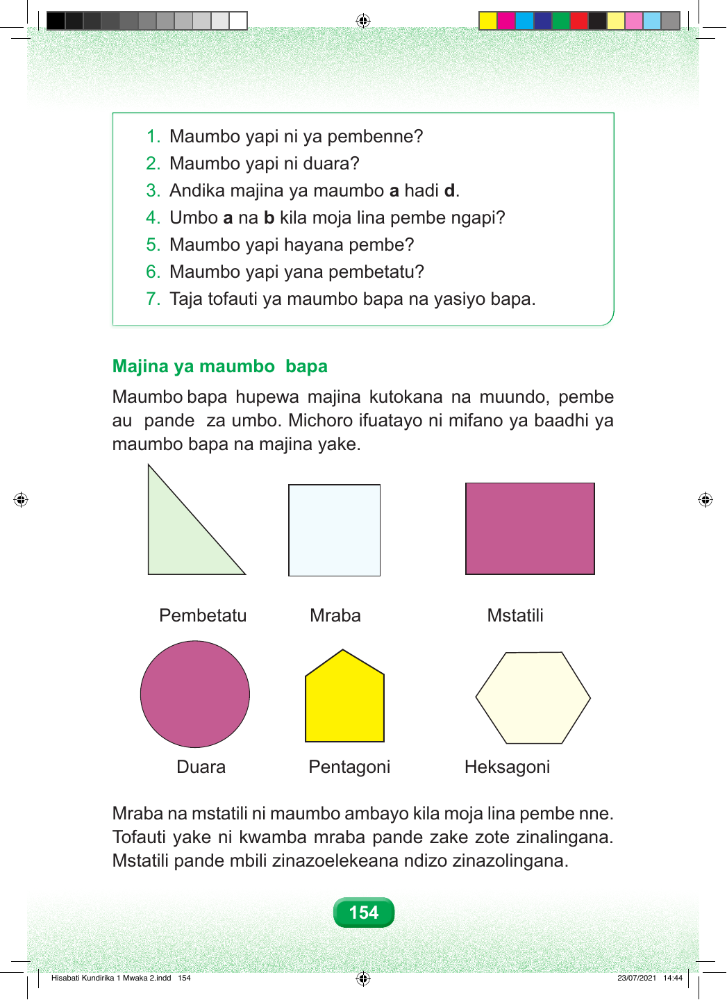

1. Maumbo yapi ni ya pembenne? 2. Maumbo yapi ni duara? 3. Andika majina ya maumbo a hadi d. 4. Umbo a na b kila moja lina pembe ngapi? 5. Maumbo yapi hayana pembe? 6. Maumbo yapi yana pembetatu? 7. Taja tofauti ya maumbo bapa na yasiyo bapa. Majina ya maumbo bapa Maumbo bapa hupewa majina kutokana na muundo, pembe au pande za umbo. Michoro ifuatayo ni mifano ya baadhi ya maumbo bapa na majina yake. Pembetatu Mraba Mstatili Duara Pentagoni Heksagoni Mraba na mstatili ni maumbo ambayo kila moja lina pembe nne. Tofauti yake ni kwamba mraba pande zake zote zinalingana. Mstatili pande mbili zinazoelekeana ndizo zinazolingana. 154 Hisabati Kundirika 1 Mwaka 2.indd 154 23/07/2021 14:44